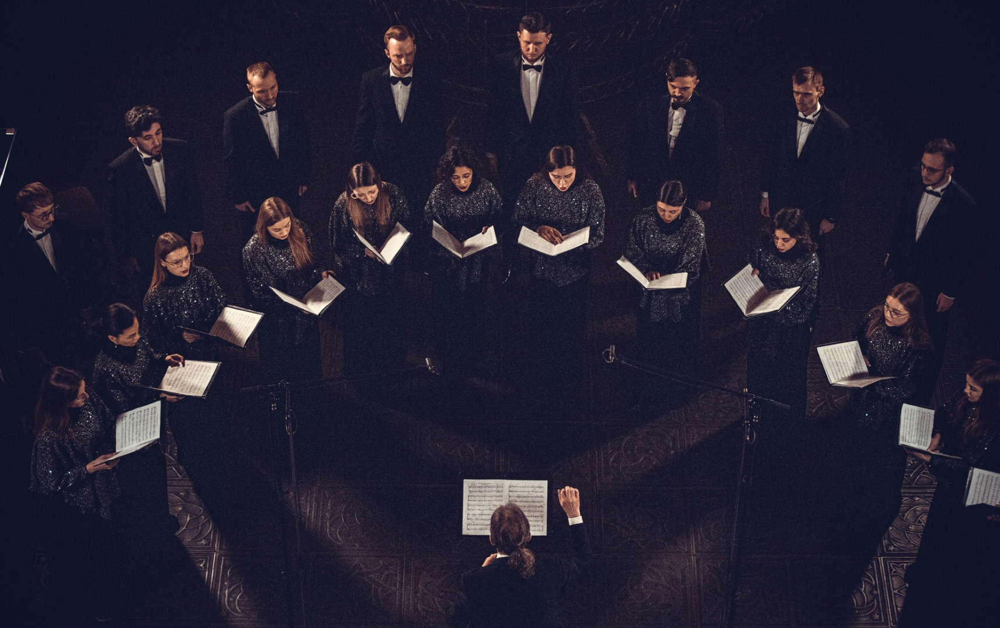
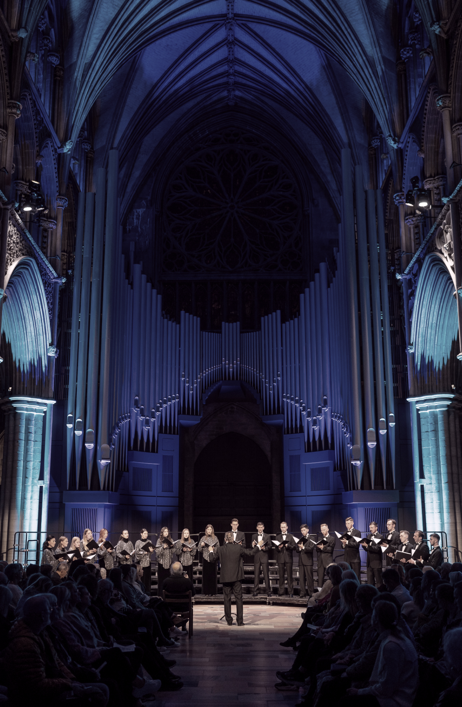
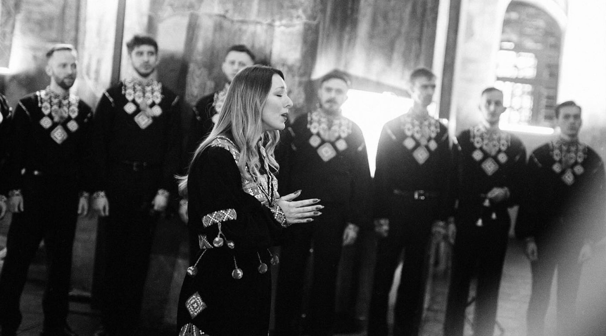
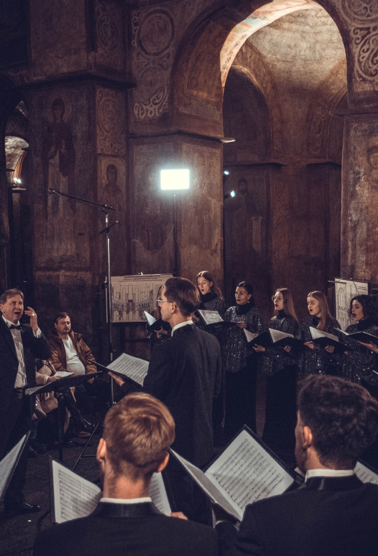

Камерний хор «Київ»
Історія колективу
Камерний хор «Київ» — це професійний колектив, заснований у грудні 1990 року. Артисти хору — випускники музичних академій та університетів України, об'єднані в спільному мистецькому шляху під керівництвом Миколи Гобдича, який здобув освіту в Київській консерваторії. У програмах хору — національна та зарубіжна музика середньовіччя, бароко, класицизму, романтизму та сучасності.
Від моменту заснування хор став невід'ємною частиною мистецького життя Києва. Завдяки творчості колективу, вдалому поєднанню традицій українського хорового мистецтва та новаторському підходу, він прославився не лише на внутрішній, але і на міжнародній сцені. Його мета — збереження традицій, сприяння духовному розвитку суспільства та представлення України та її музичного мистецтва у світі.


Володар премій
-
1992
Золотого диплому на І конкурсі хорів ім. Р.Шумана, Цвікау (Німеччина)
-
1993
Першої премії на ХІІ конкурсі музики церковної, Хайнувка (Польща)
-
1993
Гран Прі на VI Міжнародному хоровому конкурсі, Слайго (Ірландія)
-
1994
Другої премії на 49-тому Міжнародному хоровому конкурсі, Лланголен (Валія)
-
2002
Гран Прі на ХХ конкурсі серед лауреатів попередніх років, Хайнувка (Польща)
Міжнародні виступи
Камерний хор «Київ» провів понад 1500 концертних виступів на сценах 22-х країн світу: США, Канади, Ірландії, Шотландії, Валії, Англії, Франції, Голландії, Бельгії, Німеччини, Австрії, Італії, Данії, Швеції, Норвегії, Швейцарії, Польщі, Угорщини, Грузії, України.
Співав у Карнегі Холі (Нью-Йорк), Вашингтонському Національному соборі, Концертному залі Університету Дж.Мейсона (Вашингтон); Рой Томпсон Холі, Вестон Речитал Холі та Корні Холі (Торонто); Концертному залі ВВС (Лондон); Нотр-Дам’ах Франції; Костелі св. Христа (Варшава); у філармоніях Утрехта, Роттердама, Амстердама (Сoncertgebouw), Берліна, Києва; Berliner Dom; концертному залі Tivoli, Marmorkirke та Domkirke (Копенгаген); Oscars Church (Стокгольм).
Рецензії на виступи Камерного хору «Київ» опублікували «The New York Times», «The Washington Post», «The Glasgow News», «Normandie», «Der Tages Spiegel Berlin», «Műnchener Merkur», «Copenhagen Post» (Данія), «Голос України» та ін.
Спадщина та мистецтво
Камерний хор «Київ» зберігає та популяризує багатогранну спадщину українського хорового мистецтва. На базі колективу створена «Бібліотека хору «Київ» – серія нотних видань національних хорових партитур від середньовіччя до сучасності.
Було випущено 50 компакт-дисків із записами національної та зарубіжної музики, більшість з яких записано вперше.
Каталог «Бібліотеки хору «Київ» налічує близько трьохсот найменувань, серед яких дванадцять нотних збірок повних зібрань творів українських композиторів, виданих вперше.


Роль української культури в умовах війни
Навіть у найважчі періоди історії, колектив продовжує популяризувати українську культуру, демонструючи її вишуканість та унікальність.
- У серпні 2022 року хор «Київ» був запрошений для участі у фестивалі «Олавфест» у місті Трондхейм, Норвегія. Темою фестивалю була «Надія», що стала спільною темою всіх концертів. Фестиваль спрямовував увагу світової спільноти на події, пов'язані з вторгненням росії в Україну.
- Також з 26 вересня 2022 року до 02 жовтня 2022 року Камерний хор «Київ» взяв участь у Фестивалі «Тижні української культури «Bouquet Kyiv Stage» в Оксворді за підтримки Cherwell College Oxford, Oxford University Ukrainian Society, British Council Ukraine, Ukrainian Institute, «Dоm майстер клас», Orchestra of St. John’s. Великою подією фестивалю стало виконання нашим хором прем’єри твору «Сльози або пісні без слів», написаних всесвітньовідомим українським композитором Валентином Сильвестровим під впливом трагедії у Бучі.
- Хор отримав запрошення взяти участь у фестивалі високого мистецтва Bouquet Kyiv Stage з 26 квітня по 03 травня 2023 року у Грузії, країні, народ якої є справжнім другом і великою підтримкою України. У програмі фестивалю хором «Київ» було виконано програму «Пробиваючись до світла», музика українських композиторів, написана під час війни. Також у рамках виступу було проведено акцію пам’яті «Червона калина» з виконанням стрілецьких пісень, «Заповіту» Тараса Григоровича Шевченка, «Державного Гімну України». Під час акції було висаджено 41 дерево, привезених з України, в знак пам’яті, пошани і вдячності кожному з 41 Героїв Сакартвело, які віддали своє життя за Україну.
Незважаючи на складні часи, які принесла російська агресія, мистецькі колективи, такі як камерний хор «Київ», продовжують виступати, демонструючи силу української культури та її важливу роль у подоланні кризи національної ідентичності. Це також є прикладом національного патріотизму та доказом того, що справжнє мистецтво завжди знаходить способи надихати та підтримувати світ у найважчі часи.